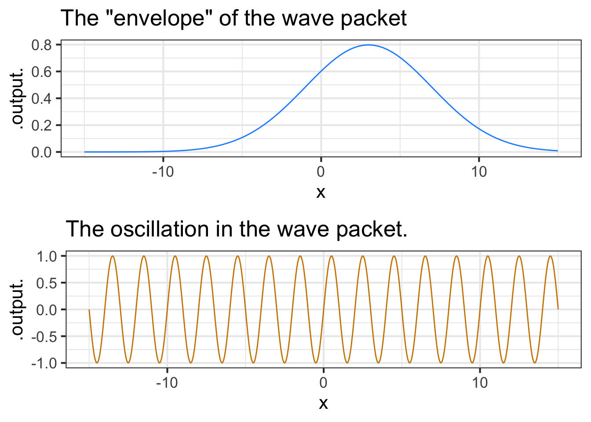
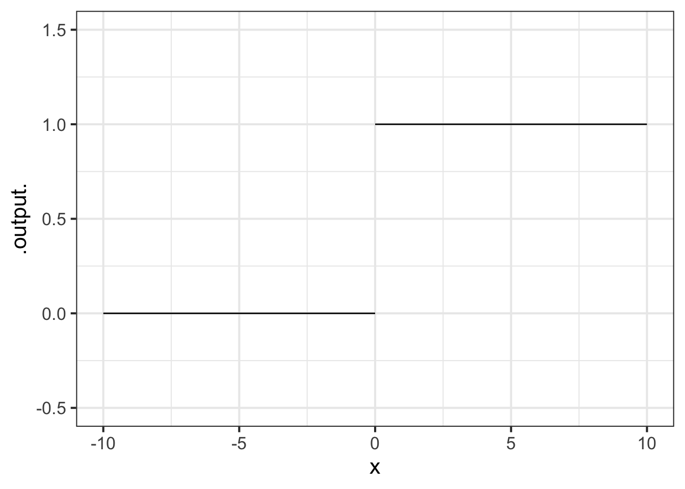

9 Assembling functions
When we need a new function for some purpose, we practically always build it out of existing functions. For illustrate, a function like \[f(x) \equiv A \sin\left(\frac{2 \pi}{P}x\right) + B\] is built by assembling a straight-line input scaling (\(2\pi/P\)), a pattern-book \(\sin()\) function, and another straight-line function \(A f(x) + B\) for scaling the output from \(\sin()\).
In this chapter, we will review four general frameworks for combining functions: linear combination of functions, function composition, function multiplication, and “piecewise” splitting of the domain. You have almost certainly seen all four of these frameworks in your previous mathematical studies, although you might not have known that they have names.
9.1 Linear combination
One of the most widely used sorts of combination is called a linear combination. The mathematics of linear combination is, it happens, at the core of the use of math in a large variety of real-world applications, whether that be constructing a Google-like search engine or analyzing medical data to see if a treatment has a positive effect.
To illustrate how linear combination is used to create new functions, consider polynomials, for instance,
\[f(x) \equiv 3 x^2 + 5 x - 2\ .\]
There are three pattern-book functions in this polynomial. In polynomials the functions being combined are all power-law functions: \(g_0(x) \equiv 1\), \(g_1(x) \equiv x\), and \(g_2(x) \equiv x^2\). With these functions defined, we can write the polynomial \(f(x)\) as \[f(x) \equiv 3 g_2(x) + 5 g_1(x) - 2 g_0(x)\] Each of the functions is being scaled by a quantity: 3, 5, and -2 in this example. Then the scaled functions are added up. That is a linear combination; scale and add.
There are other places where you have seen linear combinations:
- The parameterized sinusoid \[A \sin\left(\frac{2 \pi}{P}t\right) + B\] is a linear combination of the functions \(h_1(t) \equiv \sin\left(\frac{2 \pi}{P} t\right)\) and \(h_2(t) \equiv 1\). The linear combination is \(A\,h_1(t) + B\, h_2(t)\).
- The parameterized exponential \[A e^{kt} + B\] The functions being combined are \(e^{kt}\) and \(1\). The scalars are, again, \(A\) and \(C\).
- The straight-line function, such as \(\mbox{output}(x) \equiv A x + B\) and \(\mbox{input}(x) \equiv a x + b\). The functions being combined are \(x\) and \(1\), the scalars are \(a\) and \(b\).
There are a few reasons for us to be introducing linear combinations here.
- You will see linear combinations everywhere once you know to look for them.
- There is a highly refined mathematical theory of linear combinations that gives us powerful ways to think about them as well as computer software that can quickly find the best scalars to use to match input-output data.
- The concept of linear combination generalizes the simple idea that we have been calling “scaling the output.” From now on, we will use the linear-combination terminology and avoid the narrower idea of “scaling the output.”
- Many physical systems are described by linear combinations. For instance, the motion of a vibrating molecule, a helicopter in flight, or a building shaken by an earthquake are described in terms of simple “modes” which are linearly combined to make up the entire motion. More down to Earth, the timbre of a musical instrument is set by the scalars in a linear combination of pure tones.
- Many modeling tasks can be put into the framework of choosing an appropriate set of simple functions to combine and then figuring out the best scalars to use in the combination. (Generally, the computer does the figuring.)
9.2 Function composition
To compose two functions, \(f(x)\) and \(g(x)\), means to apply one of the functions to the output of the other. “\(f()\) composed with \(g()\)” means \(f(g(x))\). This is generally very different from “\(g()\) composed with \(f()\)” which means \(g(f(x))\).
For instance, suppose you have recorded the outdoor temperature over the course of a day and packaged this into a function \(\text{AirTemp}(t)\): temperature as a function of time \(t\). Your digital thermometer uses degrees Celsius, but you want the output units to be degrees Kelvin. The conversion function is \[\text{CtoK}(C) \equiv C + 273.15\] Notice that CtoK() takes temperature in \(^\circ C\) as input. With this, we can write the “Kelvin as a function of time” as \[\text{CtoK}\left(\text{AirTemp}(t)\right)\]
It is important to distinguish the above time \(\rightarrow\) Kelvin function from something that looks very much the same but is utterly different: \(\text{AirTemp}\left(\text{CtoK}(C)\right)\). In the first, the input is time. In the second, it is temperature in celsius.
9.3 Function multiplication
Multiplication is the third in our repertoire of methods for making new functions. With two functions \(f(x)\) and \(g(x)\), the product is simply \(f(x)g(x)\).
It is essential to distinguish between function multiplication and function composition:
In function composition, the order of the functions matters: \(f(g(x))\) and \(g(f(x))\) are in general completely different functions.
In function multiplication, the order does not matter because multiplication is commutative, that is, if \(f()\) and \(g()\) are the functions to be multiplied \(f(x) \times g(x) = g(x)\times f(x)\).
\[\underbrace{f(x) g(x)}_\text{multiplication}\ \ \ \ \underbrace{f(g(x)) \ \ \text{or}\ \ \ g(f(x))}_\text{composition}\]
In function composition, only one of the functions—the interior function is applied to the overall input, \(x\) in the above example. The exterior function is fed its input from the output of the interior function.
In multiplication, each of the functions is applied to the input individually. Then their outputs are multiplied to produce the overall output.
Transient vibration
A guitar string is plucked to produce a note. The sound is, of course, vibrations of the air created by vibrations of the string.
After plucking, the note fades away. An important model of this is a sinusoid (of the correct period to correspond to the frequency of the note) times an exponential.
Function multiplication is used so often in modeling that you will see it in many modeling situations. Here’s one example that is important in physics and communication: the wave packet. Overall, the wave packet is a localized oscillation as in Figure 9.2. The packet can be modeled with the product of two pattern-book functions: a gaussian times a sinusoid.

The initial rise in popularity of the social media platform Yik Yak was exponential. Then popularity leveled off, promising a steady, if static, business into the future. But, the internet being what it is, popularity collapsed to near zero and the company closed.
One way to model this pattern is by multiplying a sigmoid by an exponential. (See Figure 9.3.)

Functions constructed as a product of simple functions can look like this in tradition notation:
\[h(t) \equiv \sin(t) e^{-t}\]
and like this in computer notation:
h <- makeFun(sin(t)*exp(-t) ~ t)9.4 Splitting the domain
Consider the familiar absolute-value function:
\[abs(x) \equiv \left|x\right|\]
Written this way, the definition of \(abs()\) is a tautology: unless you already know what \(\left|x\right|\) means, you will have no clue what’s going on.
Can we assemble \(abs(x)\) out of pattern-book functions? What’s distinctive about \(abs(x)\) is the break at \(x=0\). There is no similarly sharp transition in any of the pattern-book functions.
One way to construct the sharp transition is to view \(abs(x)\) as two functions, one whose domain is the negative half of the number line and the other having a domain that is the non-negative half. That is, we will break the domain of \(abs()\) into two pieces. For the right piece of the domain, \(abs(x)\) is simply proportional\((x)\). For the left piece of the domain, \(abs(x)\) is \(-\)proportional\((x)\).
A function defined separately on different pieces of its domain is called a piecewise function. In the conventional mathematical notation, there is a large \(\LARGE\left\{\right.\) followed by two or more lines. Each line gives a formula for that part of the function and indicates to which interval the formula applies.
\[abs(x) \equiv \left\{ \begin{array}{rl} x & \text{for}\ 0 \leq x \\ - x & \text{otherwise}\\\end{array} \right.\]

Another piecewise function widely used in technical work, but not as familiar as \(abs()\) is the Heaviside function, which has important uses in physics and engineering.
\[\text{Heaviside}(x) \equiv \left\{ \begin{array}{cl} 1 & \text{for}\ 0 \leq x \\0 & \text{otherwise}\end{array} \right.\]
The Heaviside function is defined on the same two pieces of the number line as \(abs()\). To the right of zero, Heaviside is identical to constant(). To the left, it is identical to \(0\) times constant\(()\).
The vertical gap between the two pieces of the Heaviside function is called a discontinuity. Intuitively, you cannot draw a discontinuous function without lifting the pencil from the paper. The Heaviside’s discontinuity occurs at input \(x=0\).
9.4.1 Computing notation
The usual mathematical notation for piecewise functions, spread out over multiple lines that are connected with a tall brace, is an obvious non-candidate for computer notation. In R, the stitching together of the two pieces can be done with the function ifelse(). The name is remarkably descriptive. The ifelse() function takes three arguments. The first is a question to be asked, the second is the value to return if the answer is “yes,” and the third is the value to return for a “no” answer.
To define \(abs()\) or Heaviside\(()\) the relevant question is, “Is the input on the right or left side of zero on the number line?” In widely-used computing languages such as R, the format for asking a question does not involve a question mark. For example, to ask the question, “Is 3 less than 2?” use the expression:
3 < 2In mathematics notation, \(3 < 2\) is a declarative statement and is an impossibility. More familiar would be \(x < 2\), which is again a declarative statement putting a restriction on the possible values of the quantity \(x\).
In computing notation, 3 < 2 or x < 2 is not a declaration, it is an imperative statement that directs the computer to do the calculation to find out if the statement is true or false, or, as written in R, TRUE or FALSE.
Remember that the tilde-expressions given as input to makeFun() are declarative, not imperative. makeFun() stores the tilde expression exactly as is, with symbols such as x being names rather than quantities. makeFun() packages up the stored tilde expression in the form of an R function. The assignment command Heaviside <- ... gives the name Heaviside to the function created by makeFun().
Only when you apply the function created by makeFun() to an input quantity will the tilde-expression be turned into an imperative statement that asks the question 0 <= x and then chooses the second or third argument to ifelse() as the result.
Here’s a definition of Heaviside() written with ifelse().
Heaviside <- makeFun(ifelse(0 <= x, 1, 0) ~ x)Table 9.1 shows computer notation for some common sorts of questions.
| R notation | English |
|---|---|
x > 2 |
“Is \(x\) greater than 2?” |
y >= 3 |
“Is \(y\) greater than or equal to 3?” |
x == 4 |
“Is \(x\) exactly 4?” |
2 < x & x < 5 |
“Is \(x\) between 2 and 5?” Literally, “Is \(x\) both greater than 2 and less than 5?” |
x < 2 | x > 6 |
“Is \(x\) either less than 2 or greater than 6?” |
abs(x-5) < 2 |
“Is \(x\) within two units of 5?” |
Figure 9.6 is a graph of monthly natural gas use in the author’s household versus average temperature during the month. (Natural gas is measured in cubic feet, abbreviated ccf.)

The graph looks somewhat like a hockey stick. A sloping straight-line dependence of ccf on temperature for temperatures below \(60^\circ\)F and constant for higher temperatures. The shape originates from the dual uses of natural gas. Gas is used for cooking and domestic hot water, the demand for which is more or less independent of outdoor temperature at about 15 ccf per month. Gas is also used for heating the house, but that is needed only when the temperature is less than about \(60^\circ\)F.
We can accomplish the hockey-stick shape with a linear combination of the ramp() function and a constant. The ramp function represents gas used for heating, the constant is the other uses of gas (which are modeled as not depending on temperature. Overall, the model is \[\text{gas}(x) \equiv 4.3\, \text{ramp}(62-x) + 15\ .\] Even simpler is the model for the other uses of natural gas:
\[\text{other}(x) \equiv 15\ .\]
9.5 Computing outside the domain
Each of our pattern-book functions, with two exceptions, has a domain that is the entire number line \(-\infty < x < \infty\). No matter how big or small is the value of the input, the function has an output. Such functions are particularly nice to work with since we never have to worry about the input going out of bounds.
The two exceptions are:
- the logarithm function, which is defined only for \(0 < x\).
- some of the power-law functions: \(x^p\).
- When \(p\) is negative, the output of the function is undefined when \(x=0\). You can see why with a simple example: \(g(x) \equiv x^{-2}\). Most students had it drilled into them that “division by zero is illegal,” and \(g(0) = \frac{1}{0} \frac{1}{0}\), a double law breaker.
- When \(p\) is not an integer, that is \(p \neq 1, 2, 3, \cdots\) the domain of the power-law function does not include negative inputs. To see why, consider the function \(h(x) \equiv x^{1/3}\).
It can be tedious to make sure that you are on the right side of the law when dealing with functions whose domain is not the whole number line. The designers of the hardware that does computer arithmetic, after several decades of work, found a clever system to make it easier. It is a standard part of such hardware that whenever a function is handed an input that is not part of that function’s domain, one of two special “numbers” is returned. To illustrate:
sqrt(-3)
## [1] NaN
(-2)^0.9999
## [1] NaN
1/0
## [1] InfNaN stands for “not a number.” Just about any calculation involving NaN will generate NaN as a result, even those involving multiplication by zero or cancellation by subtraction or division.1 For instance:
0 * NaN
## [1] NaN
NaN - NaN
## [1] NaN
NaN / NaN
## [1] NaNDivision by zero produces Inf, whose name is reminiscent of “infinity.” Inf infiltrates any calculation in which it takes part:
3 * Inf
## [1] Inf
sqrt(Inf)
## [1] Inf
0 * Inf
## [1] NaN
Inf + Inf
## [1] Inf
Inf - Inf
## [1] NaN
1/Inf
## [1] 0To see the benefits of the NaN / Inf system let’s plot out the logarithm function over the graphics domain \(-5 \leq x \leq 5\). Of course, part of that graphics domain, \(-5 \leq x \leq 0\) is not in the domain of the logarithm function and the computer is entitled to give us a slap on the wrists. The NaN provides some room for politeness.
9.6 Drill

Part 1 Which of the following tilde-expressions could be used to generate the graph in Figure 9.7?
ifelse(abs(x) > 1, x^3, x) ~ xifelse(x > 0, sin(x), x) ~ xifelse(abs(x) > 1, x, x^3) ~ xifelse(abs(x) > 1, x, exp(x^2)) ~ xifelse(x > 1, 1, x^2) ~ x

Part 2 Which of the following tilde-expressions could be used to generate the graph in Figure 9.8?
ifelse(abs(x) > 1, x^3, x) ~ xifelse(x > 0, sin(x), x) ~ xifelse(abs(x) > 1, x, x^3) ~ xifelse(abs(x) > 1, x, exp(x^2)) ~ xifelse(x > 1, 1, x^2) ~ x

Part 3 Which of the following tilde-expressions could be used to generate the graph in Figure 9.9?
ifelse(abs(x) > 1, x^3, x) ~ xifelse(x > 0, sin(x), x) ~ xifelse(abs(x) > 1, x, x^3) ~ xifelse(abs(x) > 1, x, exp(x^2)) ~ xifelse(x > 1, 1, x^2) ~ x

Part 4 Which of the following tilde-expressions could be used to generate the graph in Figure 9.10?
ifelse(abs(x) > 1, x^3, x) ~ xifelse(x > 0, sin(x), x) ~ xifelse(abs(x) > 1, x, x^3) ~ xifelse(abs(x) > 1, x, exp(x^2)) ~ xifelse(x > 1, 1, x^2) ~ x

Part 5 Which of the following tilde-expressions could be used to generate the graph in Figure 9.11?
ifelse(abs(x) > 1, x^3, x) ~ xifelse(x > 0, sin(x), x) ~ xifelse(abs(x) > 1, x, x^3) ~ xifelse(abs(x) > 1, x, exp(x^2)) ~ xifelse(x > 1, 1, x^2) ~ x
9.7 Exercises
Exercise 9.01
The function bigger() is defined piecewise in terms of two extremely simple functions. Each of the two simple functions has a contour plot with contours that are parallel. The piecewise combination of the simple functions has a more complicated contour plot, with each simple function’s parallel contours showing up in half of the domain. We will call these “pieces” of the domain.
bigger <-
makeFun(ifelse(y > x, y, x) ~ x + y)
contour_plot(bigger(x,y) ~ x+y,
bounds(x=c(-2,2), y=c(-2,2)))
Part A Which of the following best describes the two pieces of the domain?
- One is above and to the left of the line of identity (that is, \(y=x\)) and the other is below and to the right of that line.
- One is \(x > 0\) and the other \(x \leq 0\)
- One is \(x > 0\) and the other \(y \leq 0\)
Task: Write a mathematical formula for \(\text{bigger}(x,y)\) as a piecewise function.
Exercise 9.02
The Heaviside function has two asymptotes.
Are they horizontal or vertical asymptotes?
What are their values?
Problem with Modeling Exercises/shark-rise-kitchen.Rmd
Problem with Modeling Exercises/beach-ride-table.Rmd
Exercise 9.11

Figure 9.12 comes from the monitoring app for a photovoltaic (solar electricity) array on two consecutive days in June 2022. The vertical axis is in kilowatts (power). The overall pattern for June 4 is a hump function with a peak around 13:00 falling to zero at 6am and 9pm. (13:00 is roughly solar noon, due to daylight savings time.) We’ll call this function sun(t). June 3 shows a more complex pattern, due to passing clouds that diminish the available sunlight.
A reasonable model for the June 3 pattern is the hump function sun(t) multiplied by an irregular function of time representing the clouds. Let’s call it cloudiness(t), imagining that the range is from 0 (dark, obscuring clouds) to 1 (no clouds at all). The power produced is therefore
power(t) \(\equiv\) solar(t) \(\times\) cloudiness(t)
Using Figure 9.12, sketch out the graph of cloudiness(t) for June 3.
One that does produce a number is
NaN^0.↩︎